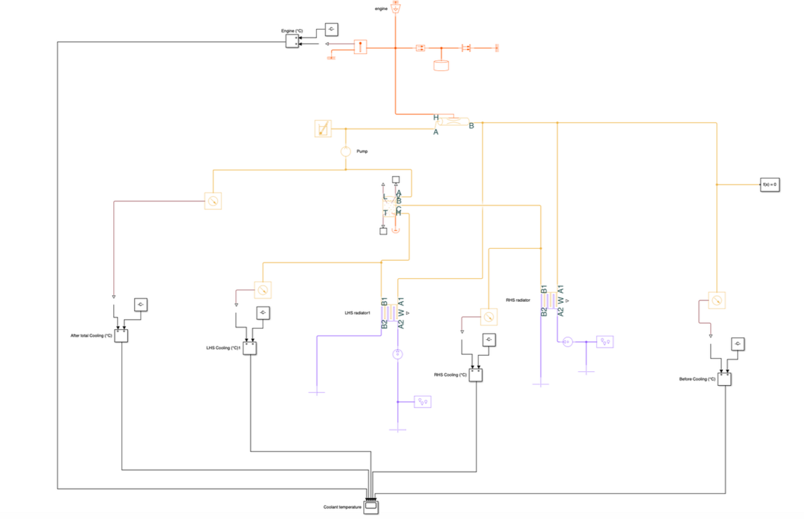
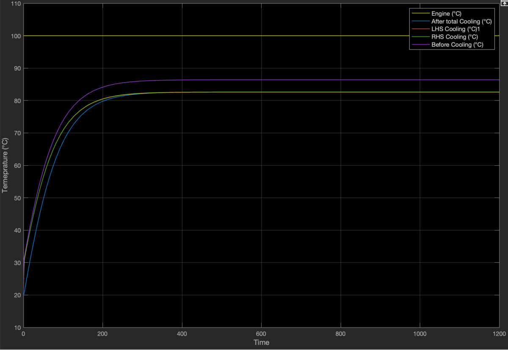

Cooling model and sidepod redesign
The car overheated in endurance: coolant passed 100 °C after five laps and peaked at 120 °C, and the fans had to run all the time.
- 30%
- of the radiator core getting useful airflow
- 85 °C
- coolant after the redesign, at 20 °C ambient
I modelled the engine, radiators and coolant tank in Simscape. The model showed that only about 30% of the radiator core was getting useful airflow, which explained why the fans could never be switched off. With the full core in use, it predicted 80–85 °C.
That result led to a sidepod redesign that ducts all of the air through the core. On the car, coolant came down to 85 °C at 20 °C ambient.

